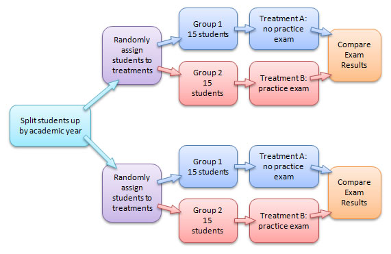

Chapter 2 Sampling Schemes and Experimental Design
2.1 Data in the Wild
Data is a collection of information about a group of individuals or units. Most often we have a number of variables, or measures of interest, that we observe on each individual or unit. The collection of information is called a dataset. Data is ubiquitous in today’s society. Healthcare, marketing, history, biology, … almost every field has data for which a sound statistical analysis can glean useful insights. However, the quality of data varies greatly from study to study and this implies the conclusions which you can draw from a study vary as well. Let’s jump in!
2.1.1 Data from Experiments
Some data comes from a well-designed experiment where a researcher uses sound principles to select units for the study and conduct interventions.
For example, a mechanical engineer wanted to determine which variables influence gas mileage of a certain year and model of a car. Gas mileage would be referred to as the response variable for this study since it characterized the performance of interest.
After careful consideration, the engineer chose to investigate a few explanatory variables they believed were associated with the response. They wanted to learn about the relationship between gas mileage and the factors below. A factor is an explanatory variable that takes on a finite number of values, called levels, set by the researcher.
Study factors (levels of each factor are given in parentheses):
- Tire pressure (low, standard)
- Octane rating of fuel (regular, midgrade, premium)
- Type of driving (defensive, aggressive)
They also chose to control or hold constant the following variables during the execution of the study:
- Weather conditions
- Route
- Tire type
- Past car usage
The engineer randomly selected a sample of 24 cars from the assembly line for that year and model of car (we’ll learn more about the importance of selecting a representative sample of cars shortly). Software was used to randomly assign a treatment to each of the 24 cars. A treatment is a particular combination of the factor levels. For instance, low tire pressure, regular octane fuel, and defensive driving was a treatment. The cars would be called the experimental units (EUs) as they are the unit the treatments are assigned to.
The experiment was run and the gas mileage found for each car. As the car was measured, we’d refer to the car as the observational unit (OU).
The key thing that makes this study an experimental study is the active role the research plays in manipulating the environment. Here, the researcher uses random assignment of treatments to the EUs.
Experimental Study - researchers manipulate the conditions in which the study is done.
Visual of experiment - maybe a researcher with arrows going out to cars where the tires, gas tank, and driver are emphasized in some way
This short description exhibits three important concepts in experimental design that we’ll come back to many times.
Pillars of experimental design: (Put an outer block around this)
- Randomization - treatments are randomly assigned to experimental units
- Replication - multiple (independent) experimental units are assigned the same treatment
- Control - some study conditions are held constant to reduce variability in the response
2.1.2 Data from Observational Studies
Some data comes from an observational study where the researcher collects data without imposing any changes.
For example, an economist wanted to investigate the effects of recently added tariffs on agricultural products to the amount and value of such products that are traded between the United States and Asia. This study had two response variables, the amount and value of each product traded between the two parties.
In order to take into account seasonal variation and time of year, the economist decided to compare the two response variables from the current year - 6 months worth of data - against the values of the two response variables during the same 6 month periods for each of the past 5 years. The year variable associated with a measurement was an explanatory variable. Alternatively, the year variable could have also been labeled to take on one of two values: no-tariff (past years’ data) or tariff (current year’s data).
The researcher obtained the data from the census bureau and conducted their analysis.
Notice that the researcher, while certainly being actively involved in the careful consideration of the data to be collected and how to format the data, did not actively intervene or impose a change. This is the key component of an observational study.
Observational Study - researchers collect data without imposing any changes on the study environment.
Visual of observational study here - something like a researcher with a clipboard looked at a globe with arrows to represent trading or something like that
2.1.3 Observational vs Experimental Studies
You may have noticed that both example studies had some things in common. For instance, both studies had response variables that characterize the performance of the study in some sense. Importantly, these response variables had variation. That is, observing the variable is non-deterministic even under seemingly identical situations. Accounting for, and dealing with, this variation is at the heart of the reason statistical methods are needed! There were also explanatory variables that the researcher was interested in with regard to their relationship with the response variable. Determing ad quantifying these relationships is often the major goal of a study.
Both studies also hoped to make statements or conclusions about a larger group using data from a subset of that larger group. This idea is referred to as statistical inference. More formally the group of values, items, measurements, or individuals of interest defines the population of interest and the data collected on that group represents the sample. The number of observations in the sample is referred to as the sample size. For the gas mileage example, the population was all cars of the year and make in question, the sample was the data collected on the 24 cars, and the sample size was 24. For the tariff example, the population was all future agricultural products traded between the United States and Asia, the sample was the information from the six years of trade data, and the sample size is six. The two populations mentioned here differ in that the car population is a real, finite population and the trade population is a conceptual, infinite population. As long as a finite population is large relative to the sample size, the differences tend not to be important. We’ll discuss these ideas in more detail as they arise.
Population - (Possibly conceptual) group of values, items, measurements, or individuals of interest
Sample - Subset of the population on which we observe data
Sample Size - Number of observations in the sample
Statistical Inference - Process of using sample data to make statements or claims about a population. Two major goals of inference:
- Determining and quantifying relationships between explanatory variables and the response
- Predicting the response for some setting of explanatory variables.
Both of these studies had to determine how to obtain their observations. For the experiment, 24 cars were used. For the observational study, six years of data were collected. How this data is collected can be extremely important in terms of the types of conclusions that can be made. Data needs to be representative of the population in which the researcher hopes to make inference. Otherwise, the conclusions made are likely invalid or in need of qualifications. We’ll discuss the idea of what makes a good or bad sampling scheme later in the chapter.
The major difference between the two studies was the active (experimental) and passive (observational) roles played by the researcher. This difference is also of vital importance to the types of conclusions that can be made from the study. A well-designed experiment can often allow the researcher to infer causation to the treatments, whereas an observational study cannot.
The conclusions a researcher can make based on how the data were collected and the type of study are outlined in the table below.
Redo this table with our own wording
Figure 2.1: Scope of Inference, cite: Khan Academy
Doing an observational study doesn’t mean that your study is bad! An observational study is sometimes done out of necessity when an experiment wouldn’t be ethical or feasible. For the tariff example, there really isn’t a way to conduct an experiment. If we wanted to design an experiment to see if smoking causes lung cancer, that would be unethical because we can’t force people to smoke. The key point is that the implications we can draw will differ greatly between experimental and observational studies and will depend heavily on the quality (in relation to the population) of the data you have. To apply causation to an observational study, causal inference methods can sometimes be used. We won’t cover this extensive topic in this text. See the references and readings section for a few useful texts.
2.1.4 The Role of Statistics
A statistic itself is generally a summary of data. When most people think of statistics they think of things like a batting average or a proportion of people that will vote for a proposal. Statistics as a discipline is the science of learning from data. It encompasses the collection of data, the possible design of an experiment, the summarization of collected data, and the modeling or analysis used in order to make a decision or further scientific knowledge.
Statistics in everyday use usually refers simply to summaries about data (means/averages, proportions, or counts).
Statistics as a field encompasses a much larger range of ideas including how to collect data, model data, and make decisions or come to conclusions when faced with uncertainty.
Statistical methods are needed in situations where data is variable. There is no need to apply statistical methods to study the relationship between temperature in degrees Celsius and degrees Fahrenheit. Given the degrees in Celsius, we know teh exact value in degrees Fahrenheit. However, if we again collected data about the gas mileage of vehicles under the exact same study conditions we’ll get slightly different gas mileage readings. If we observed another six month period of trade data we’ll see different amounts and values traded. Accounting for this variability in data is the reason to apply statistical methods and is a key component of any statistical analysis.
Ideally, one should try to take a holistic view of a study. Before any data is collected it is vital to understand the goals and background of the study. These will inform the data you ideally want to collect as well as the data that you are able to collect - which may need to act as a proxy. A plan should be determined for the actual collection and storing of the data. The entire study design will then inform the statistical analysis and conclusions that can be drawn.
Taking this bigger picture view of the problem, we can usually follow these steps:
Add icons to these as well as the overall logo here
- Define the objective of the experiment and understand the background (Define Objective & Background)
- Select appropriate response variables (Select Response)
- Identify sources of variation (Determine Sources of Variation)
- Choose sampling scheme and/or experimental design (Select Design)
- Carry out the study (Do Study)
- Statistically analyze the data (Do Statistical Analysis)
- Draw conclusions from the analysis while considering limitations and the steps above as well as communicate results (Draw Conclusions & Communicate)
We’ll focus on this entire process in our chapter motivating examples. Mostly, we’ll investigate designed experiments. We attempt to tackle each major topic in this text with a problem-based approach. That is, we identify a real-world motivating example and discuss the relevant statistical ideas in the context of that problem. We then provide a discussion of the main statistical ideas and concepts and provide related references and readings. Each chapter includes with a section that outlines the use of R and SAS for implemention. Finally, where applicable, we include a section that outlines some of the mathematical concepts - this section is always optional!
2.2 Motivating Example: Sampling - Farmer’s Market
2.2.1 Define Objective & Background
A nutrition scientist wanted to understand the cleanliness and food hygiene of the vendors at the North Carolina State Farmer’s Market (henceforth the farmer’s market). Secondarily, she wanted to learn about vendor sales to see if there was a relationship with their cleanliness and food hygiene. The researcher had access to the names of each vendor’s business, their general purpose, and the products they sold.
The researcher needed to decide the scope of their study. Formally, they needed to define the population of interest. The population is the group of people or units of interest to the researcher. As her interest centered around food-related businesses, she restricted to looking at the vendors which sold horticultural crops. She hoped that conclusions made by her study could apply to all horticulture vendors at the farmer’s market - thus, this is her population.
Note: One could try to do a study at just the North Carolina State Farmer’s Market and extend the results to all farmer’s markets in the state or in the south, but that would require many assumptions to be valid.
A list of the horticultural products sold and their availability is reproduced below.


2.2.2 Select Response
The researcher needed to determine the variables to collect that would best help to answer their questions of interest. These variables that characterize the experiment are called response or target variables.
To investigate the knowledge of hygiene and safety, a short questionnaire was developed to allow the vendor’s head manager (or similar employee) to describe their safety protocol and knowledge:
- For your produce with signs that say “clean” or “washed”, what does this mean?
- How are the foods transported to the market? eg: refrigerated/closed storage
- What food safety risks do you as a vendor worry about?
- Do you require one-use gloves to be used? (Yes or No)
- Do you designate a person in charge of money transactions? (Yes or No)
The researcher also planned to do an assessment of the cleanliness of each vendor’s station at different times. Her team would pick 30 days during the summer in which they’d walk through the vendor stations and collect the following information:
- Overall is the station clean (Yes or No)
- Is anyone smoking around the food products? (Yes or No)
- Are tables covered? (Yes or No) If so, what is the material?
- Do employees appear to be clean? (Yes or No)
- Are one-use gloves used? (Yes or No)
- Is there a designated person in charge of money transactions (Yes or No)
She noted that there is a yearly cycle to the products sold and decided to collect vendors sales information by looking at the (AMT) amount sold in the last year (in dollars), the (PURCHASE) total number of purchases made in the last year, and the (NUM_ITEMS) total number of items sold in the last year. For the last variable, they had to decide how to measure the number of items sold for the different types of crops. For most of the crops looking at the total weight (in lbs) sold made sense. But, for some, other measures were needed. For example, for sweet corn the number of ears sold would be recorded.
You can see that there are many decisions that the researcher must make in simply deciding the response variables to collect! A poor choice here can make or break a study.
2.2.3 Determine Sources of Variation
The response variables clearly have some relationship to other variables that could be collected. For instance, the NUM_ITEMS variable is clearly going to be different based upon what crops the vendor sells. The AMT variable would differ depending on the size of the vendor’s inventory. These are examples of explanatory variables or variables that define the study conditions. Explanatory variables go by many names such as predictors, features, or independent variables.
A main consideration about whether or not to record a variable is whether or not the variable would be related to a variation in a response variable. Since the response variables are truly what is of interest, there is really not much of a point in recording variables that likely have no relationship with it.
Choosing the explanatory variables can also indicate further questions of interest. For instance, the researcher may want to compare the percent of “Yes” for the overall cleanliness score for vendors that mainly sell vegetables to those that mainly sell fruit leading to a comparison across groups being of interest. She may want to try to model the AMT of cantaloupe sold as a function of the cleanliness score.
The average amount for the population or a subpopulation would be referred to as a parameter of interest. Formally, a parameter is a summary measure about a population. Common parameters investigated include a mean, proportion, median, or variance of different subgroups of the population.
The explanatory variables she collected about the vendors included the types of crops sold, the services they provide (grow, pack, and/or ship), and whether or not they are a “Got to be NC member”.
For the questionnaire, she added the additional questions below:
- Are there any organic or synthetic chemicals/fertilizers/pesticides/manures used on the products?
- Are all foods grown/processed by the vendors?
- What kind of soil were the products grown in? eg: organic/compost/plant material
For the assessment of cleanliness, she added the following question:
- How many people are working?
Should we talk about formalizing the other questions they want to answer here??
2.2.4 Select Design
For this study the researchers aren’t interested in doing an intervention so an observational study was being done. The major task to consider for the observational study is how to select participants from the population. The subset of the population we (attempt to) observe our data on is called the sample. The sample size is the number of measurements in the sample.
Ideally, we would measure every member of our population. This is called a census. If a census can be done then the value of a population’s parameter can be found exactly by simply summarizing the population data. However, conducting a census can be extremely costly or time-intensive so most of the time a census cannot be done. This means that the information we collect would likely be different if we collected it again. Accounting for this variability is the main reason statistical analysis is needed.
How the researcher selects their sample is extremely important. This method is often referred to as the sampling scheme. Using a statistically valid sampling scheme is vital to the assumptions made when doing statistical inference. A valid sampling scheme implies that every member of the population has a known and non-zero chance of inclusion in the sample.
There are many good ways to select the sample and many bad ways. Need to get more info about the farmer’s market to finish this part (Talk about bad first and why bad - visuals too) Talk about good and why good - visuals too.
This idea is further fleshed out at the end of the chapter. (reference/link this)
Here they chose to do a stratified sample to make sure that they didn’t leave out any important subgroups.
Should we talk about formalizing the other questions they want to answer here??
2.2.5 Do Study
Go and talk to chosen vendors. May have some non-response issues. Ideally a contingency for this should be developed when considering the sampling scheme.
Should we talk about formalizing the other questions they want to answer here??
2.2.6 Do Statistical Analysis
Should we talk about formalizing the other questions they want to answer here??
The major goals of this study were simply to describe the vendors at the farmer’s market. In this case we can produce numerical and graphical summaries.
Careful discussion of not selecting a modeling technique based on this unless it is a pilot study or an exploratory study else we have increased our nominal type I error rate…
Spend a lot of time here talking about graphs of different types. Sample means, sample variances, etc.
Discuss population curves vs sample histograms and the relationship.
Not a formal test here but comparisons of interest etc.
2.2.7 Draw Conclusions & Communicate
What actionable things have we found? Likely some trends to investigate further. Perhaps run an experiment to formally see if some alteration can be effective.
What can we conclude realistically from this data? To what population are we talking?
2.3 Statistical Ideas and Concepts
Identifying population discussion, questions of interest, what does a difference mean, parameters, …
2.3.1 Obtaining a Representative Sample
To get data, we need units for our sample. We’ll discuss a few good and bad ways to obtain units.
Sampling
Samples must be representative of the population to make valid inference.
Sampling Scheme – the method used for selecting members of the population for the sample
Some Sampling Schemes:
- Simple Random Sample
- Stratified Sample
- Convenience Sample (Not good!) Many others both good and bad!
2.3.1.1 Simple Random Sampling (SRS)
- Assign each member in the population a number.
- Use a random number mechanism to select which members to use.
Why bother?
Examples: - Service Evaluation - disgruntled customers may be more inclined to complete them. \ - 1936 US presidential election it was incorrectly predicted that Landon would overwhelmingly defeat Roosevelt (source: Literary Digest ).
+ Questionnaires were mailed only to people who had both telephones and cars
+ Selected sample was not representative of the population.Remark: SRS does not guarantee a “good” or “representative” sample every time.
- can get all small values or all large values
- can get all males or all females
On average we should get a representative sample.
2.3.1.2 Stratified Sampling
Divide a population into groups (strata) and select a SRS from each group.
Example: Academic Support is interested in offering premium movie channels to students that live in dorms.
This would cause each student’s housing cost to increase by $250 a semester. They would like to conduct a survey to gauge support of this change.
How could we use a SRS? Stratified Sample?
2.3.1.3 Convenience Sample (BAD)
- Use most convenient group available or decide on the spot.
- Often responses from people who choose to participate.
Bad Sampling Examples? American Idol, SYTYCD, etc. ESPN.com polls, News site polls, etc.
How we select our sample is important as we want to avoid biasing our results! There are a number of different types of data we can collect. - A good method must have a statistical randomness to them (i.e. must use a random mechanism!)
Sampling is about getting units for your study. Once done there are two basic types of studies: Observational Study - observe individuals and measure outcomes without influencing the responses.
Ex: measuring political beliefs in using a poll, measuring yield of a crop based on rainfall
Recall Experimental Study - deliberately impose a treatment on individuals and observe their response.
Big difference in conclusions drawn! - Cannot usually infer causation from observational studies, but you can from a well-designed experiment. - Experiments are not always feasible or ethical. i.e. cannot assign people to smoke a pack a day or have expectant mothers drink a certain amount of alcohol.
How to do this important and nuanced. Next we’ll …
2.3.2 Fundamentals of Designed Experiments
Ex: assigning different fertilizers and irrigation method and measuring crop yield, assigning temperatures of water to tanks containing a fish and observing weight gain
To describe the methods for creating a well-designed experiment, we first need some definitions.
- Response Variable - Variable of interest that characterizes performance or behavior.
- Explanatory Variables - Variables that determine the study conditions (can be quantitative or categorical).
- Covariate - Quantitative explanatory variable.
- Factor - Categorical explanatory variable of interest.
- Level - The specified value of a factor.
- Treatment - A specific experimental condition, either the level of a factor (if only 1 factor) or the combinations of levels from a number of factors.
- Experimental units (EUs) - Units on which the treatments are assigned.
- Control Treatment - Benchmark treatment sometimes necessary for comparison (to avoid the placebo effect).
- Replicate - Name given to EUs that receive the same treatment.
- Experimental Error - Used to describe the variation in response among EUs that are assigned the same treatment.
Example: A manufacturer of paper used for making grocery bags is interested in improving the tensile strength of the product. Product engineering thinks that tensile strength is a function of the hardwood concentration in the pulp and that the range of hardwood concentrations of practical interest is between 5 and 20%. A team of engineers responsible for the study decides to investigate four levels of hardwood concentration (see table below). They decide to make up six test specimens at each concentration level, using a pilot plant. All 24 specimens are tested on a laboratory tensile tester, in random order.
What are the response variable, experimental units, factor(s), levels of the factor(s), treatments, and number of replications per treatment?
Example: A mechanical engineer is studying the surface roughness of parts produced in a metal-cutting operation. The experiment looked at 16 parts, selected using a SRS of today’s parts. A roughness measurement was recorded on each piece. Two parts were randomly assigned to each combination of - feed rate – 20 inches/minute or 30 inches/minute - depth of cut – 0.025 or 0.04 inches - tool angle – 15 or 25 degrees
What are the Response variable, EUs, Factors, Levels of the factors, Treatments, and Number of Replicates per treatment?
Notice that many of the response values are different. What is causing them to be different?
Sources of Variation in the responses of an experiment:
Treatment effect - we hope there is an effect due to the variables we are setting
Variables accounted for - We record some variables that are not of interest, but we think may have an effect on the response.
Variables unaccounted for (these make up the Experimental Error or Error Variation)
- Inherent variability in experimental units - Experimental units are different!
Example: No two people, paper towels, concrete blocks, or even lab rats are exactly the same.
Consequence: Experimental units respond differently to the same treatment
Measurement error - Multiple measurements of a same experimental unit typically contain error.
If the same experimental unit is measured more than once, will the value be the same?
Example: Blood Pressure, Break a water sample in two, measure each for bacteria\
- Variations in applying/creating treatments
The treatment is not clearly defined, leaving room for interpretation.
Example: Two researchers mix concrete, one stirs for 10 minutes and one for 20 minutes, will they come out exactly the same? Temperature is of interest but two ovens don`t heat exactly the same, etc.
- Effects from any other extraneous (or lurking) variables - Extraneous variables are those variables that are not part of the treatment, but may influence the response.
Example: For the oven example, the experiment is done over the course of several days. There may be slight differences due to humidity changes.
Example: A gardener wants to know if levels of water and fertilizer are better in terms of producing greater crop yield. The gardener decides to treat 2 greenhouses with 4 treatments (water low - fertilizer low, water high - fertilizer low, etc.). There were 2 replicates for each treatment within each greenhouse.
Identify the sources of variation and experimental error (identify what type they are).
No matter how hard we try, some experimental error will remain. What we can do is use good experimental design techniques to ensure our study is valid.
DOE is about creating the optimal experiment to determine the effects of different treatments. Different types of experimental designs are then analyzed differently.
Pillars of Experimental Design
Randomization - means that the treatments are randomly allocated to the EUs.
- Every EU has a chance to get a different treatment, so helps protect the results of the analysis against a systematic influence of lurking variables.
- Allows the observed responses to be regarded as a random sample.
- Note: Different randomization schemes lead to different statistical analyses.
- Completely Randomized Design (CRD) - for t treatments, replicated \(n_t\) times each, use a random number generator to assign the treatments to the EUs.
- Most basic randomization design - assumes all EUs are exchangeable.
- Every EU has a chance to get a different treatment, so helps protect the results of the analysis against a systematic influence of lurking variables.
Example: We are doing an experiment to determine the effect of nutrition (3 different diets) on weight gain in humans. How can we perform a CRD for this study?
Notes about randomization:
- Similar in spirit to a SRS in the fact that it does not guarantee balance of lurking variables. However, if we have a large enough study we should balance out the lurking variables between the treatment groups.
Randomization is different than random sampling!
- With an Random Sample, chance determines who will be included in the sample.
- Once we have our sample, Randomization determines which EUs get which treatments.
Many other experimental designs! All use randomization.
Replication - Repetition of an experiment using a large group of subjects to reduce chance variation in the results
- Allows us to generalize the results to the population and increases reliability of conclusions.
- Allows an estimate of variability (an estimate of experimental error) not due to the treatment effect.
Note: Replication does not mean that we measure the same EUs multiple times, this is called repeated measures. Observations from repeated measures experiments cannot usually be considered independent.
Ideally as many EUs as we can afford. Think if we had 3 diets and 3 EUs. Diet 1 was better than diet 2 and diet 3, not a very reliable conclusion, perhaps person 1 just loses weight more easily. Now if 100 people at each diet and on average diet 1 was much better, more reliable conclusion.
By averaging over the many observations we can reduce the effects of measurement error and error in applying/creating the treatments.
Methods for accounting for/reducing experimental error
Controlling Variables - holding certain variables constant across the EUs
- Decreases generalizability, but reduces experimental error.
We’re not interested in the effects of these variables on the response. These variables affect the response in exactly the same manner, so that we don’t see the effects on the conclusions. We don`t get information on what happens at levels other than the fixed one.
Example: For the 3 diet example. What variables might we control?
Blocking - Divide subjects with similar characteristics into `blocks’, and then within each block, randomly assign subjects to treatment groups.
Blocks - Groups of EUs sharing a common level of a confounding variable.

Similar to controlling, but allows for increased generalizability. EUs within a block are very similar (decreases experimental error there as all the EUs in a block are affected similarly by the confounding variable). By having enough blocks to cover the range of the population you can still generalize.)
Example: Two new types of material are developed (type A and type B) for use as a dash board in a car. The material must withstand high temperatures due to the sun and the greenhouse effect.
- To test which material holds up better, the manufacturer randomly selects 20 pieces of type A and 20 pieces of type B material.
- The company has 4 large ovens (oven 1, 2, 3, and 4) for testing. Each oven has 5 pieces of type A and 5 of type B randomly placed into each.
- After 24 hours, the amount of degradation is measured.
What are the blocks? How many replicates do we have? How many replicates in each block?
There are also methods for dealing with some explained experimental error during the analysis stage - Namely ANCOVA.
These ideas are very important. Unless you are well versed in statistical methods and ideas you should consult a statistician before investing time and money in an experiment.
A poorly designed study can never be saved, but a poorly analyzed one has the possibility of being reanalyzed.
Open-ended Example:
Mike and John are interested in finding the optimal type of disc and the throw style on the throw distance of a disc. They consider 3 different disc types (Putter, Mid-Range and Driver) and 2 different throwing techniques (Forehand, Backhand). They gather a group of 30 people to use in the study (hopefully they are an unbiased and representative sample from their population of interest!).
We want to design an experiment that will assist them.
Specify the factors, treatments, experimental units, response variable, and how you would do the randomization. What other sources of variation may not be accounted for? Could you do blocking?
Example: Your company has 20 different types of tires for compact cars. There are 4 types of all season tires, 6 types of snow tires, and 10 types of standard tires.
The length of time the tires last is very important to customers. You are to select 60 tires, run them, and test them for wear.
With a partner - Define the Population, possible Parameter of interest, Sample, and possible Statistic of interest.
Then come up with a SRS, Stratified, and convenience sampling design for this problem.
This class is about analyzing data. Once we have data, we need to organize it and summarize it in useful/meaningful ways.
Good discussion of what makes a good sampling design revisit. Maybe a statified example like the river and selecting houses example as a quick expose of the issues with not doing a truly random sampling technique.
A major goal of a study is usually to conduct statistical inference. Inference can involve determine which variables are important in relation to a response variable and/or predicting a response variable. To formally do inference we need to define the population of interest as well as parameters we want to study.
Population - all the values, items, or individuals of interest
Parameter - a (usually) unknown summary value about the population
Ideally, we’d be able to measure every member of the population and exactly calculate the value of any population parameter. This would involved conducing a census. A census is usually not feasible. Instead we take a subset of the population and try to use these observations to make statements or claims about the population.
Sample - a subset of the population we observe data on
Statistic - a summary value calculated from the sample observations
Example - A political scientist surveys 400 people randomly from a list of all registered voters in a particular county. He asks the people if they plan to vote in the upcoming election and 312 say they do.
Relate above to definitions…
To discuss paramters and statistics more easily, symbols are used to denote them. Luckily, there is a common notation that, for the most, is consistent across statistical literature.
Note: \(\bar{Y}=\frac{1}{n}\sum_{i=1}^{n}Y_i\) and \(S^2=\frac{1}{n-1}\sum_{i=1}^{n}(Y_i-\bar{Y})^2\) where \(n\) is the sample size (or number of observed values in the sample). Sometimes you’ll see other notation for proportions (……. fill in and change table)
Question of interest will lead you to which parameter you have interest in. Careful consideration of what your study goals are will also most likely lead you to which type of data you will collect.
Examples of why Observational Studies Can be Bad
George Will WP column about SAT vs amount of money spent Pisani and Perv? many bad examples of inference
Stuff about power/sample size calculation somewhere?
2.3.2.1 CRD
2.3.2.2 Block
2.3.2.3 Split plot
2.3.2.4 Strip plot
2.3.2.5 RCBSP
2.3.2.6 2^k
…?
2.4 References and Readings
Something about causal inference
Sampling stuff
DOE stuff